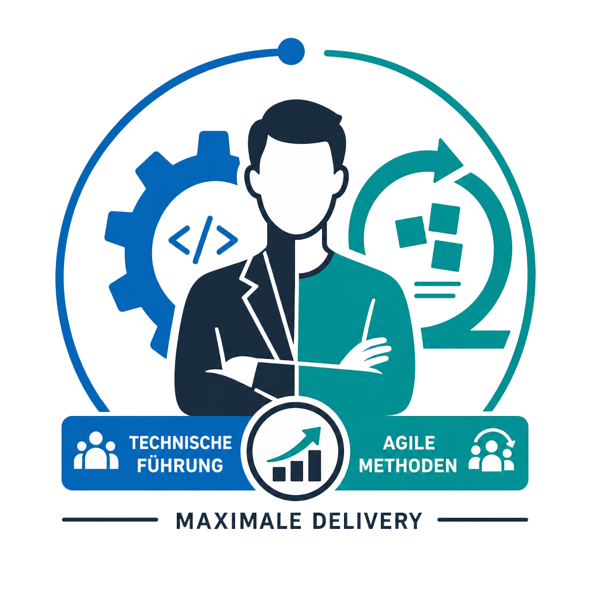
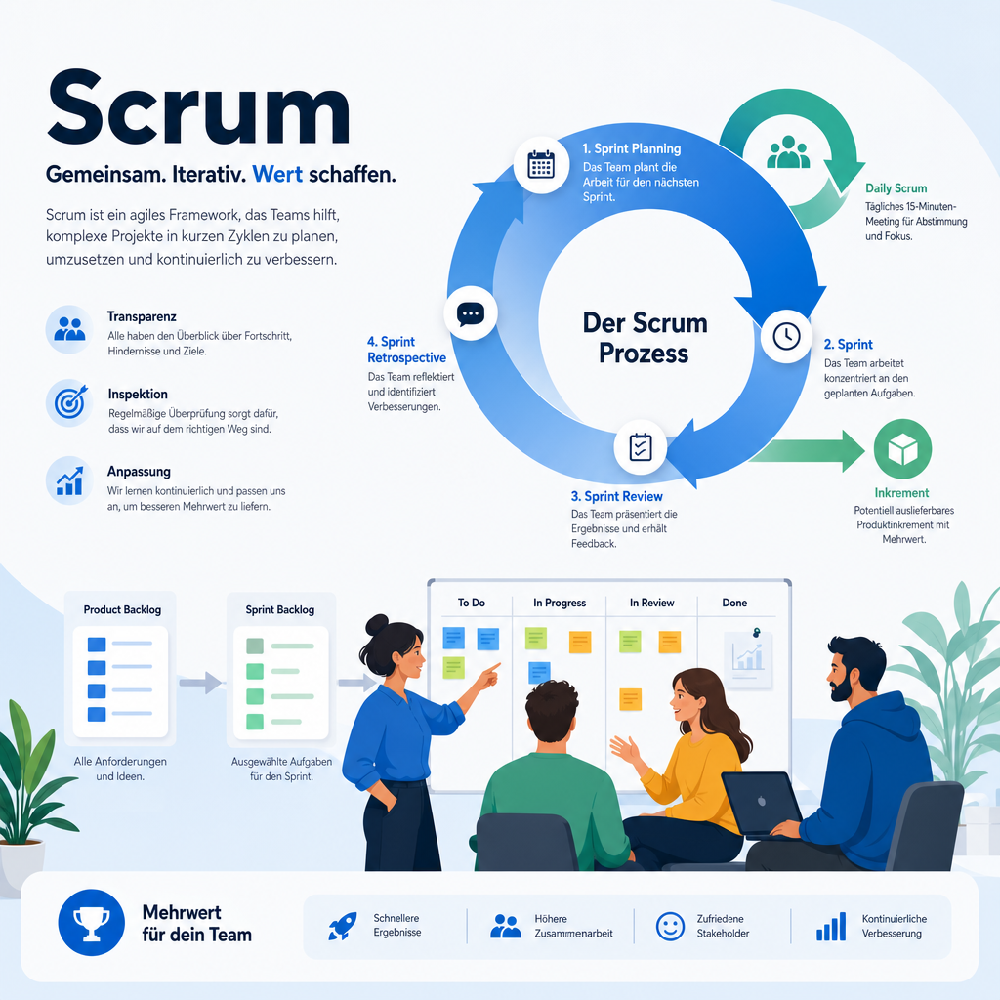
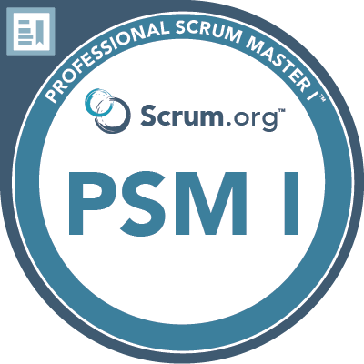
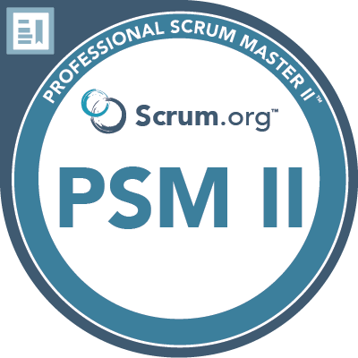

Softwareentwickler & Technical Scrum Master (PSM II)
Ich helfe Teams, bessere Software schneller zu liefern – mit technischer Tiefe und klarer, agiler Führung.
Kontakt aufnehmen
Agile Coaching, Moderation, Flow‑Optimierung, Team‑Entwicklung.
Backend, APIs, CI/CD, Testing, Refactoring, DevOps‑Basics.

Technische Führung + agile Methoden für maximale Delivery.
2–4 Stunden Analyse + klare Handlungsempfehlungen.
5–10 Std/Monat – ideal für Teams ohne Full‑Time‑Scrum‑Master.
Bugfixing, Refactoring, CI/CD‑Optimierung, technische Schulden.

Ich bin Michael, Softwareentwickler und zertifizierter Scrum Master (PSM II). Meine Stärke liegt in der Kombination aus technischer Tiefe und agiler Führung.
Ich helfe Teams dabei, bessere Software schneller zu liefern – durch klare Prozesse, moderne Entwicklungspraktiken und pragmatische, menschliche Zusammenarbeit.

Professional Scrum Master I (Scrum.org)

Professional Scrum Master II (Scrum.org)
📧 michael.gaertner[at]mg-networking.com
🔗 LinkedIn: https://linkedin.com/in/mgaert
📍 Wendlingen am Neckar